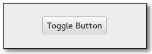

Gtk.ToggleButton¶
Example¶

- Subclasses:
Methods¶
- Inherited:
Gtk.Button (29), Gtk.Bin (1), Gtk.Container (35), Gtk.Widget (278), GObject.Object (37), Gtk.Buildable (10), Gtk.Actionable (5), Gtk.Activatable (6)
- Structs:
Gtk.ContainerClass (5), Gtk.WidgetClass (12), GObject.ObjectClass (5)
class |
|
class |
|
class |
|
|
|
|
|
|
|
|
|
|
|
|
Virtual Methods¶
- Inherited:
Gtk.Button (6), Gtk.Container (10), Gtk.Widget (82), GObject.Object (7), Gtk.Buildable (10), Gtk.Actionable (4), Gtk.Activatable (2)
|
Properties¶
- Inherited:
Gtk.Button (9), Gtk.Container (3), Gtk.Widget (39), Gtk.Actionable (2), Gtk.Activatable (2)
Name |
Type |
Flags |
Short Description |
|---|---|---|---|
r/w/en |
If the toggle button should be pressed in |
||
r/w |
If the toggle part of the button is displayed |
||
r/w/en |
If the toggle button is in an “in between” state |
Style Properties¶
- Inherited:
Signals¶
- Inherited:
Gtk.Button (6), Gtk.Container (4), Gtk.Widget (69), GObject.Object (1)
Name |
Short Description |
|---|---|
Should be connected if you wish to perform an action whenever the |
Fields¶
- Inherited:
Gtk.Button (6), Gtk.Container (4), Gtk.Widget (69), GObject.Object (1)
Name |
Type |
Access |
Description |
|---|---|---|---|
button |
r |
Class Details¶
- class Gtk.ToggleButton(*args, **kwargs)¶
- Bases:
- Abstract:
No
- Structure:
A
Gtk.ToggleButtonis aGtk.Buttonwhich will remain “pressed-in” when clicked. Clicking again will cause the toggle button to return to its normal state.A toggle button is created by calling either
Gtk.ToggleButton.new() orGtk.ToggleButton.new_with_label(). If using the former, it is advisable to pack a widget, (such as aGtk.Labeland/or aGtk.Image), into the toggle button’s container. (SeeGtk.Buttonfor more information).The state of a
Gtk.ToggleButtoncan be set specifically usingGtk.ToggleButton.set_active(), and retrieved usingGtk.ToggleButton.get_active().To simply switch the state of a toggle button, use
Gtk.ToggleButton.toggled().- CSS nodes
Gtk.ToggleButtonhas a single CSS node with name button. To differentiate it from a plainGtk.Button, it gets the .toggle style class.- Creating two
Gtk.ToggleButtonwidgets.
static void output_state (GtkToggleButton *source, gpointer user_data) { printf ("Active: %d\n", gtk_toggle_button_get_active (source)); } void make_toggles (void) { GtkWidget *window, *toggle1, *toggle2; GtkWidget *box; const char *text; window = gtk_window_new (GTK_WINDOW_TOPLEVEL); box = gtk_box_new (GTK_ORIENTATION_VERTICAL, 12); text = "Hi, I’m a toggle button."; toggle1 = gtk_toggle_button_new_with_label (text); // Makes this toggle button invisible gtk_toggle_button_set_mode (GTK_TOGGLE_BUTTON (toggle1), TRUE); g_signal_connect (toggle1, "toggled", G_CALLBACK (output_state), NULL); gtk_container_add (GTK_CONTAINER (box), toggle1); text = "Hi, I’m a toggle button."; toggle2 = gtk_toggle_button_new_with_label (text); gtk_toggle_button_set_mode (GTK_TOGGLE_BUTTON (toggle2), FALSE); g_signal_connect (toggle2, "toggled", G_CALLBACK (output_state), NULL); gtk_container_add (GTK_CONTAINER (box), toggle2); gtk_container_add (GTK_CONTAINER (window), box); gtk_widget_show_all (window); }
- classmethod new()[source]¶
- Returns:
a new toggle button.
- Return type:
Creates a new toggle button. A widget should be packed into the button, as in
Gtk.Button.new().
- classmethod new_with_label(label)[source]¶
- Parameters:
label (
str) – a string containing the message to be placed in the toggle button.- Returns:
a new toggle button.
- Return type:
Creates a new toggle button with a text label.
- classmethod new_with_mnemonic(label)[source]¶
- Parameters:
label (
str) – the text of the button, with an underscore in front of the mnemonic character- Returns:
a new
Gtk.ToggleButton- Return type:
Creates a new
Gtk.ToggleButtoncontaining a label. The label will be created usingGtk.Label.new_with_mnemonic(), so underscores in label indicate the mnemonic for the button.
- get_active()[source]¶
-
Queries a
Gtk.ToggleButtonand returns its current state. ReturnsTrueif the toggle button is pressed in andFalseif it is raised.
- get_inconsistent()[source]¶
-
Gets the value set by
Gtk.ToggleButton.set_inconsistent().
- get_mode()[source]¶
-
Retrieves whether the button is displayed as a separate indicator and label. See
Gtk.ToggleButton.set_mode().
- set_active(is_active)[source]¶
-
Sets the status of the toggle button. Set to
Trueif you want theGtk.ToggleButtonto be “pressed in”, andFalseto raise it. This action causes theGtk.ToggleButton::toggledsignal and theGtk.Button::clickedsignal to be emitted.
- set_inconsistent(setting)[source]¶
-
If the user has selected a range of elements (such as some text or spreadsheet cells) that are affected by a toggle button, and the current values in that range are inconsistent, you may want to display the toggle in an “in between” state. This function turns on “in between” display. Normally you would turn off the inconsistent state again if the user toggles the toggle button. This has to be done manually,
Gtk.ToggleButton.set_inconsistent() only affects visual appearance, it doesn’t affect the semantics of the button.
- set_mode(draw_indicator)[source]¶
- Parameters:
draw_indicator (
bool) – ifTrue, draw the button as a separate indicator and label; ifFalse, draw the button like a normal button
Sets whether the button is displayed as a separate indicator and label. You can call this function on a checkbutton or a radiobutton with draw_indicator =
Falseto make the button look like a normal button.This can be used to create linked strip of buttons that work like a
Gtk.StackSwitcher.This function only affects instances of classes like
Gtk.CheckButtonandGtk.RadioButtonthat derive fromGtk.ToggleButton, not instances ofGtk.ToggleButtonitself.
- toggled()[source]¶
Emits the
Gtk.ToggleButton::toggledsignal on theGtk.ToggleButton. There is no good reason for an application ever to call this function.
- do_toggled() virtual¶
Emits the
Gtk.ToggleButton::toggledsignal on theGtk.ToggleButton. There is no good reason for an application ever to call this function.
Signal Details¶
- Gtk.ToggleButton.signals.toggled(toggle_button)¶
- Signal Name:
toggled- Flags:
- Parameters:
toggle_button (
Gtk.ToggleButton) – The object which received the signal
Should be connected if you wish to perform an action whenever the
Gtk.ToggleButton's state is changed.
Property Details¶
- Gtk.ToggleButton.props.active¶
- Name:
active- Type:
- Default Value:
- Flags:
If the toggle button should be pressed in
- Gtk.ToggleButton.props.draw_indicator¶
-
If the toggle part of the button is displayed